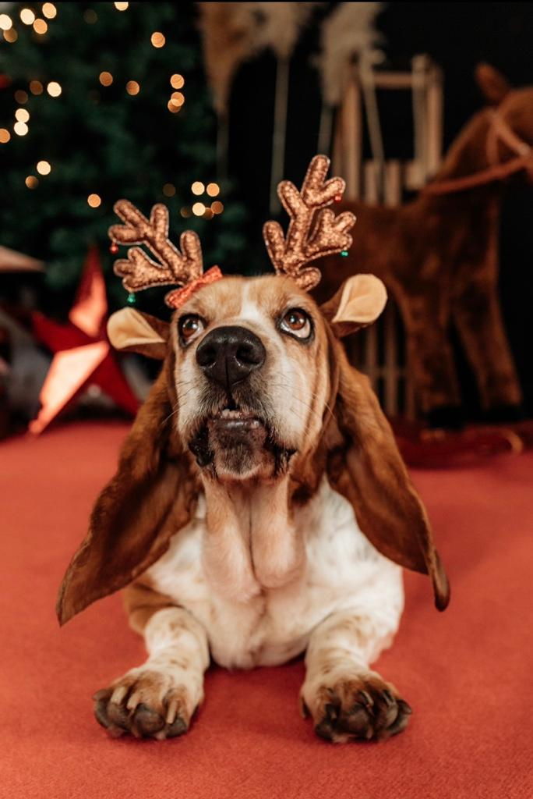

Moje ime je Klara Bensic. Studentica sam prve godine Grafičkog fakulteta. Živim u malom mjestu u Podravini po imenu Kalinovac. U slobodno vrijeme volim šetnje po prirodi, druženje s prijateljima te vožnju biciklom. Obožavam putovati i fotografirati. Proputovala sam velik dio Europe i maleni dio Azije, a sa svakog putovanja nosim velika iskustva i maleni magnet za podsjetnik. Na zidu imam kolekciju od 80 – ak magneta sa svih mjesta koje sam posjetila.
Molim vas, budite putnik, a ne turist.
Probajte nove stvari, upoznajte nove ljude
i gledajte iza onoga što je ispred vas.
To su ključevi za razumijevanje svijeta u kojem živimo.
- Andrew Zimmern
Svi koji putuju znaju za izreku da je svugdje lijepo, ali doma je najljepše. Slažem se s time. Sva mjesta koja sam posjetila bila su prekrasna, ali najviše volim doći kući i vidjeti svoju obitelj, psa i prijatelje.
